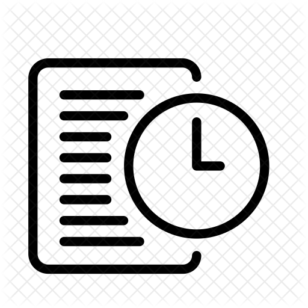

<ion-header>
  <ion-toolbar color="primary">
    <ion-title>Task Manager</ion-title>
    <ion-avatar slot="end" style="height: 10%; width:10%"
                class="ion-text-center ion-margin"
                (click)="presentPopover($event)">
      </ion-avatar>
  </ion-toolbar>
</ion-header>

<ion-content>

    <ion-searchbar placeholder="Filter Todos" class="search-bar"
                   autocomplete="on">
    </ion-searchbar>

    <ion-fab vertical="top" horizontal="end" slot="fixed">
      <ion-fab-button (click)="addNewTask()">
        <ion-icon name="add"></ion-icon>
      </ion-fab-button>
    </ion-fab>


  <ion-list *ngIf="tasks" claa="tasks-list">
    <ion-item *ngFor="let task of tasks" class="ion-margin-end">
      <ion-avatar slot="start">
        
      </ion-avatar>
      <ion-label (click)="onTaskDetails(task)">
        <h2>{{task.displayTitle}}</h2>
        <p>{{task.description}}</p>
      </ion-label>
    </ion-item>
  </ion-list>

</ion-content>
